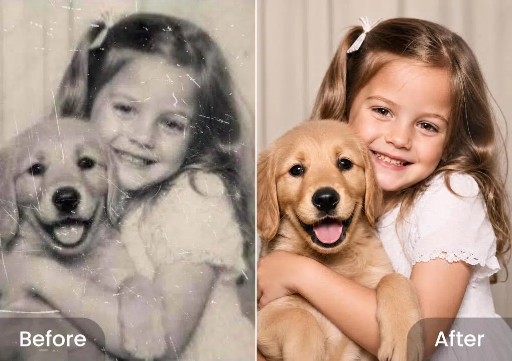

用了一年多 BeautyPlus，那些当初没发现的好用和不好用
从"拍照前置美颜"的第一印象，到图层系统+AI工具的组合玩法，一篇老用户的平淡报告。
装 BeautyPlus 到现在大概一年半，从最初只是把它当拍照时开实时美颜的工具，慢慢变成了日常修图的主力。中间换过几次手机、跟过几次版本更新，有些地方越用越顺手，也有些当初没注意到的坑慢慢露出来。最早是从BeautyPlus官网看到实时美颜的宣传才注意到它。
当初装它的理由很简单——在官方下载拿了安装包，不想拍完照再打开别的修图 app 一张一张调。实时滤镜和实时美颜把修图前置到了取景器里，按下快门那一刻成片就已经带效果了，这个"所见即所得"的体验当时觉得很新鲜。
越用越顺手的几个地方
第一个是 Glow Cam 虚拟打光。自拍最头疼的不是脸长什么样，是光线——顶光拍出黑眼圈、背光拍成剪影、房间灯偏黄脸色就差。虚拟打光在取景画面里叠了一层可移动的虚拟光源，把光"打"到想要的位置。后来发现它和滤镜的配合顺序很重要：滤镜改的是颜色，打光改的是明暗分布，脸色不好先打光、色调不对再上滤镜，顺序反了容易出现"滤镜救不了的光"。这个认知是用了小半年才摸透的，之前一直瞎调。
第二个是图层系统。这是整个 app 里最接近专业软件的部分，但入口藏得比较深。画布上长按某个图层能上下拖动调层级、向左拖删除，长按进入多选状态还能成组——抠个图配上影子贴纸，成组后一起拖动不会散。刚上手时长按拖拽经常误删，用了一阵后发现长按大概要停 0.5 秒才进入编辑态，这个节奏掌握住就顺了。图层样式里的混合模式也好用，正片叠底做阴影融合、滤色做发光效果，做拼贴的时候比想象中出片。
第三个是老照片修复。抽屉里翻出奶奶八十大寿的合影，泛黄、边角折痕严重，翻拍后上传 AI 工具区的老照片修复，几秒出来效果——褪色的色彩回来了、折痕自动填补了。翻拍质量决定修复上限，这点踩过坑：第一次用闪光灯直打有反光，修复后脸上留了个光斑，第二次靠窗自然光斜照、镜头和照片平行翻拍，出来的效果家人都认出来了。修好之后再走一遍画质增强，观感又上一档。

越用越烦的几个地方
最烦的是效果强度默认值。刚装的时候每次开实时美颜，默认强度直接拉满，拍出来的脸假得像戴了个塑料面具。一开始以为是自己选的滤镜不对，换了好几个还是假。后来才发现不是滤镜的问题——实时效果默认强度就是偏高，得手动回调到 30%~50% 才自然。这个设定让人困惑：厂商为什么默认给个过强的值？如果是担心用户觉得"没效果"，那好歹给个"自然档"作为预设，让新用户有个靠谱的起点。
第二个是限时滤镜的节奏。滤镜库里有节日限定、流行主题的限时滤镜，节日过了就下线。中秋期间上了一套玉兔滤镜，我当时用得还挺顺手，想存几张备用素材的时候发现已经找不到了。这种"过了这村没这店"的运营策略能理解，但对想长期打磨某一套拍摄风格的人来说挺折腾的。
第三个是复杂拼贴导出的层级问题。图层多的时候如果不先成组再调顺序，导出结果和预览可能不一样——这个问题遇到过两次，每次都是反复排查最后发现是某个贴纸被照片盖住了但预览没显示。养成了一个习惯：导出前先把图层结构理一遍，确认顺序。
每天离不开 vs 碰都没再碰
老照片修复现在是每周都要用的功能——家里翻相册的效率因为它提高了不少，奶奶也开始主动把旧照片拿出来让我扫。相比之下，一开始天天用的实时美颜，现在反而没那么依赖了——不是功能退步了，是自己慢慢接受了"带点瑕疵也挺好"的心态，有时候拍一张干净的原片、后期精修反而更有掌控感。
观感修正：当初高估了什么、低估了什么
当初装它的时候，给它贴的标签是"拍自拍时的美颜工具"。现在回头看，这个标签低估了它——图层系统加 AI 工具的组合其实能做相当完整的拼贴创作，老照片修复更是个差异化很强的实用功能。
但同时也高估了它的"智能化"——实时效果的强度判断得靠自己手动调，图层操作的长按节奏得自己摸，翻拍质量得自己把控。这些地方没人告诉你"应该怎么调才对"，全是用出来的经验。
说个反直觉的发现：实时滤镜和实时美颜这套"前置修图"的思路，其实不一定适合所有场景。极暗环境下实时渲染会放大噪点，关掉效果先保证清晰度才是正确选择；想保留最大后期空间的时候，拍"干净"的原片、把修图交给编辑器才是正解。之前不管什么场景都开实时效果，踩了好几次暗环境出片糊的坑才改过来——后来去BeautyPlus文档翻了一下，发现人家其实早就把这些边界条件写清楚了，是自己没注意到。
去留结论
短期内不会卸载。老照片修复的效率提升、图层系统的创作空间，还有 Glow Cam 在光线问题上的解决力，这三件事加起来值得我占着手机里的这个位置。
但也有保留意见：如果哪天老照片修复、画质增强这些 AI 工具变成订阅专属，可能要认真考虑一下——毕竟当初选择它，很大程度上是因为这些功能随 app 附赠，没有额外的付费门槛。到时候再看看同类产品有没有更好的选择吧。
长期用下来的感受是：这不是一个"一眼惊艳"的 app，它的好用藏在细节里——需要时间摸透长按的节奏、强度的分寸、滤镜和打光的顺序。摸透了就是效率工具，没摸透就会觉得"怎么调都不对"。跟过日子挺像的，得处。